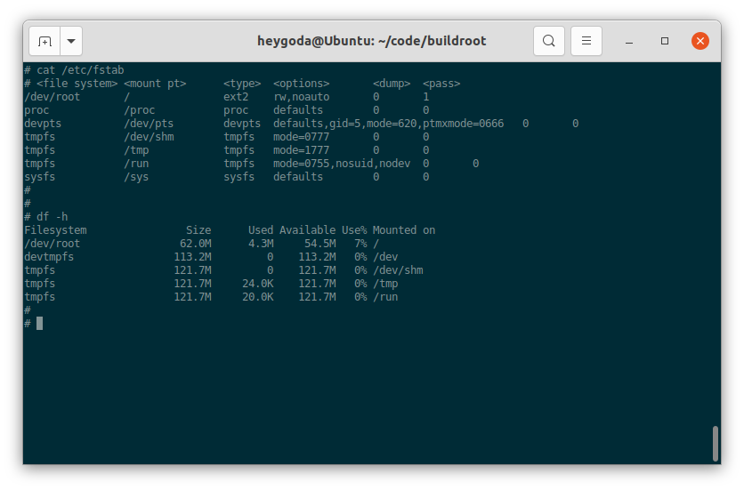
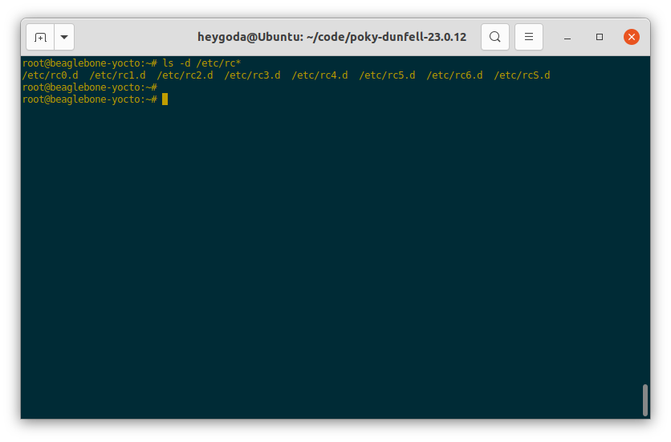
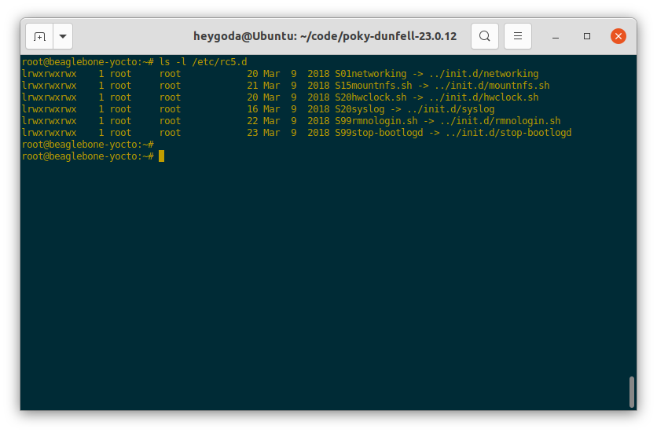
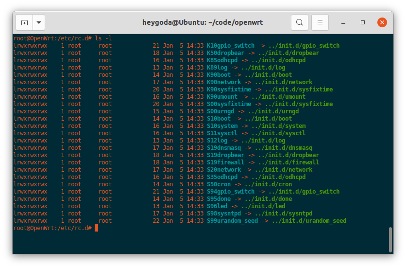

概述
嵌入式 Linux 设备多种多样，因 Linux 系统内核、驱动、应用等的自由裁剪和组合，导致每种设备上的系统操作方式存在差异，在此总结一些针对嵌入式 Linux 系统的通用操作方法；
准备工作
本文档使用 QEMU 来模拟实际嵌入式设备，QEMU 是一个开源的硬件模拟器和虚拟器，当用作硬件模拟器时，QEMU 可以在一台机器（例如 PC）上运行为另一台机器（例如 ARM 开发板）制作的操作系统和程序；本文档使用 Buildroot、OpenWrt、Yocto 等构建系统来制作嵌入式 Linux 系统固件，以下在 Ubuntu 20.4 系统中分别说明其制作方法；
请先确保 Ubuntu 20.4 系统安装了 ，执行以下命令：
sudo apt install qemu
使用 Buildroot 制作固件
Buildroot 是一个简单、高效、易用的构建工具，通过交叉编译生成嵌入式 Linux 系统，支持多种嵌入式 Linux 开发板，同时也支持一些 QEMU 板级；以下使用 Buildroot 板级 qemu_arm_vexpress_defconfig 来构建固件，对应 qemu 机器 vexpress-a9；
安装必要的软件（参考链接： The Buildroot user manual）：
sudo apt install which sed make binutils build-essential gcc g++ bash patch gzip bzip2 perl tar cpio unzip rsync file bc wget git
下载 Buildroot 源码并更新到需要的版本：
# 使用git下载源码库
# git clone https://git.busybox.net/buildroot
# 镜像下载
git clone https://gitee.com/mirrors/buildroot.git
cd buildroot
git reset --hard 2021.02.2
执行默认配置的编译对应板级的固件：
# cd buildroot
make qemu_arm_vexpress_defconfig
make
编译成功后固件在 output/images/ 目录下，如图：
执行脚本 output/images/start-qemu.sh serial-only 以终端方式（无显示屏）运行编译后的固件，如图：
使用 OpenWrt 制作固件
OpenWrt 是一个面向嵌入式设备的 Linux 操作系统，最初是针对路由器设备，拥有强大的网络组件和扩展性，具有良好的模块化和可定制性，现在也常用做其他嵌入式设备的 Linux 发行版；
因 OpenWrt 源码 编译时间较长，且编译过程中可能碰到各种各样的问题，为方便起见，在此使用 官方提供 的 QEMU arm 镜像文件；
下载镜像文件：
mkdir -p openwrt-bin
cd openwrt-bin
# 下载内核镜像
wget https://downloads.openwrt.org/snapshots/targets/armvirt/32/openwrt-armvirt-32-zImage
# 下载根文件系统镜像并解压
wget https://downloads.openwrt.org/snapshots/targets/armvirt/32/openwrt-armvirt-32-rootfs-ext4.img.gz
gunzip -kv openwrt-armvirt-32-rootfs-ext4.img.gz
如图：

使用以下命令运行镜像：
# run-qemu-arm_openwrt.sh
qemu-system-arm -nographic -cpu cortex-a7 -smp 1 -M virt -m 256 \
-kernel openwrt-armvirt-32-zImage -append "console=ttyAMA0,115200 rootwait root=fe00" \
-blockdev driver=raw,node-name=hd0,cache.direct=on,file.driver=file,file.filename=openwrt-armvirt-32-rootfs-ext4.img \
-device virtio-blk-pci,drive=hd0
运行后如图：

使用 Yocto 制作固件
Yocto 是一个开源协作项目，提供了一些列模板、工具和方法，旨在帮助用户创建自定义的基于 Linux 的系统，可用于任何架构的硬件，例如：嵌入式设备、服务器或虚拟环境等；以下使用 beaglebone-yocto 板级来作演示；
参考链接：Yocto Project Quick Build — The Yocto Project ® 3.4 documentation, 4 Using the Quick EMUlator (QEMU) — The Yocto Project ® 3.4 documentation
安装必要的软件：
sudo apt install gawk wget git diffstat unzip texinfo gcc build-essential chrpath socat cpio python3 python3-pip python3-pexpect xz-utils debianutils iputils-ping python3-git python3-jinja2 libegl1-mesa libsdl1.2-dev pylint3 xterm python3-subunit mesa-common-dev zstd liblz4-tool
下载源码并更新到需要的版本：
# 使用git下载源码库
# git clone git://git.yoctoproject.org/poky
# cd poky
# git reset --hard dunfell-23.0.12
# 若git下载较慢，可直接下载源码包并解压
wget http://downloads.yoctoproject.org/releases/yocto/yocto-3.1.12/poky-dunfell-23.0.12.tar.bz2
tar -xvf poky-dunfell-23.0.12.tar.bz2
设置环境变量：
cd poky-dunfell-23.0.12
source oe-init-build-env
# 执行上一条命令后，终端将进入build目录，下面的内容都以该目录为基础
修改编译配置文件 build/conf/local.conf，修改板级为 beaglebone-yocto，将第 31 行：
#MACHINE ?= "beaglebone-yocto"
改为：
MACHINE ?= "beaglebone-yocto"
启用并行编译并节省磁盘空间，在文件末尾加入：
INHERIT += "rm_work"
BB_NUMBER_THREADS = "2"
PARALLEL_MAKE = "-j 2"
如图：
然后开始编译：
bitbake -k core-image-minimal
编译时间较长，若编译失败，可删除 sstate-cache, cache, tmp目录下的所有文件重新编译，编译成功后的固件在 tmp/deploy/images/beaglebone-yocto/ 目录下，如图：

修改 QEMU 运行配置文件 tmp/deploy/images/beaglebone-yocto/core-image-minimal-beaglebone-yocto.qemuboot.conf，加入选项 -nographic，如图：

最后执行以下命令运行编译的镜像：
runqemu beaglebone-yocto
运行后如图：
认识和操作嵌入式 Linux 设备
▣00_系统初始化
▢01_资源和配置
▢02_硬件设备
▢03_shell脚本
▣04_交叉编译
▢05_网络工具
00_系统初始化
Linux 系统无法自我启动，需要依靠其他的程序来引导启动，在桌面和服务器发行版中，引导启动流程如图所示：The 20,000-foot view of the Linux boot process

在嵌入式 Linux 系统中，流程如图所示：Overview of boot process

可见，无论在何种平台上，引导启动流程最终都会运行一个名为 init 的进程，在系统中的文件为 /sbin/init，该进程的实体及其相关的规则也称为初始化系统：init system；该进程是 Linux 系统启动的第一个进程，其进程 ID 为 1，负责创建系统所需的所有其它进程和守护进程，是系统中所有其它进程的「祖先」，在系统关机时该进程还负责回收所有的系统资源。
init 初始化系统简介
Linux init 初始化系统有不同的版本，如：sysvinit、systemd、openRC、runit等，点击 这里 了解其差异性；
- sysvinit 是 System V 风格的初始化程序集合，是一个经典的初始化系统；
- systemd 是sysvinit的 替代版本，并且支持 System V 和 LSB init 脚本，常见于桌面和服务器 Linux 发行版，如 Ubuntu：

- openRC 是 Gentoo 发行版的原生初始化系统，是一个基于依赖的初始化系统，用于类 Unix 系统；支持在启动时以正确的顺序启动必要的系统服务，在系统使用时管理它们，在关闭时停止它们；
- runit 是一个跨平台的 Unix 初始化系统，可用于替换 sysvinit，具有服务监控、可靠的日志记录工具等特点；
嵌入式 Linux 中常用的初始化系统有BusyBox init、sysvinit 和 OpenWrt procd 等，systemd 因占用资源较多，不常用于嵌入式设备；
BusyBox init
BusyBox 是一个组合了许多常见 Unix 实用程序精简版的软件，其中包括一个 init 程序，如图：
该 init 程序有一个默认的配置文件 /etc/inittab，该文件包含了一系列规则，以便在系统启动或关机时执行相应的程序；BusyBox 源码中有该文件的示例和解释 inittab « examples - busybox：
-
规则格式：
<id>::<action>:<program>每条规则包含 3 个字段id、action 和 program，每两个字段间用
:隔开（注意 id 和 action 之间有一个被忽略的空字段），每条规则单独占用一行； -
各字段含义如下：
| 字段 | 含义 |
|---|---|
| id | 指定执行程序的终端，该字段内容会被附加到 /dev/ 再使用，例如该字段为 ttyS0，则最终为 /dev/ttyS0；如果为空，则使用 init 缺省的 stdin/out； |
| action | 指定执行程序的条件，有效的条件为：sysinit, wait, once, respawn, askfirst, shutdown, restart, ctrlaltdel，具体含义见下表； |
| program | 程序及其参数 |
- action 字段条件含义如下：
| action | 含义 |
|---|---|
| sysinit | 该条件优先级高于其他所有条件，系统启动后首先执行的程序应该使用此条件，该条件下 init 等待程序执行完成后再执行下一条； |
| wait | 在 sysinit 后执行，该条件下 init 等待程序执行完成后再执行下一条； |
| once | 在 wait 后执行，该条件下 init 不等待程序执行完就开始执行下一条； |
| respawn | 接着 once 后执行，该条件下执行程序并在程序退出时重新执行它，常用于执行守护进程； |
| askfirst | 接着 once 后执行，功能与 respawn 类似，但在运行程序前 init 会提示 "Please press Enter to activate this console"，等待用户按下「回车键」之后，才开始执行程序，常用于在终端启动一个不需要登录用户名和密码的交互式 shell； |
| shutdown | 系统「暂停/重启/关机」（ halt/reboot/poweroff ）或 init 接收到 SIGQUIT 信号时执行， |
| restart | init 接收到 SIGQUIT 信号（键盘上同时按下 Ctrl-\\ ）时执行，表示需要重新加载 /etc/inittab 配置文件，如果没有定义 restart 条件，则 SIGQUIT 信号不起作用； |
| ctrlaltdel | init 接收到 SIGINT 信号（键盘上同时按下 Ctrl-Alt-Del ）时执行，执行完后，askfirst / respawn 的执行流程会被挂起； |
-
如果没有定义
/etc/inittab配置文件，BusyBox init 会使用以下默认规则：::sysinit:/etc/init.d/rcS ::askfirst:/bin/sh ::ctrlaltdel:/sbin/reboot ::shutdown:/sbin/swapoff -a ::shutdown:/bin/umount -a -r ::restart:/sbin/init tty2::askfirst:/bin/sh tty3::askfirst:/bin/sh tty4::askfirst:/bin/sh- 系统启动时，首先执行程序
/etc/init.d/rcS； - 然后在
init缺省的stdin/out和/dev/tty2, /dev/tty3, /dev/tty4中启动 shell:/bin/sh； - 系统关机时，执行
/sbin/swapoff -a和/bin/umount -a -r，即关闭系统交换分区和卸载所有文件系统； - 当键盘上同时按下
Ctrl-Alt-Del时，执行/sbin/reboot，即重启系统； - 当
init接收到SIGQUIT信号时，执行/sbin/init，即重新加载/etc/inittab；
- 系统启动时，首先执行程序
-
下面是一个来自 Buildroot 的通用配置文件：
# /etc/inittab # Startup the system ::sysinit:/bin/mount -t proc proc /proc ::sysinit:/bin/mount -o remount,rw / ::sysinit:/bin/mkdir -p /dev/pts /dev/shm ::sysinit:/bin/mount -a ::sysinit:/sbin/swapon -a null::sysinit:/bin/ln -sf /proc/self/fd /dev/fd null::sysinit:/bin/ln -sf /proc/self/fd/0 /dev/stdin null::sysinit:/bin/ln -sf /proc/self/fd/1 /dev/stdout null::sysinit:/bin/ln -sf /proc/self/fd/2 /dev/stderr ::sysinit:/bin/hostname -F /etc/hostname # now run any rc scripts ::sysinit:/etc/init.d/rcS # Put a getty on the serial port ttyAMA0::respawn:/sbin/getty -L ttyAMA0 0 vt100 # GENERIC_SERIAL # Stuff to do for the 3-finger salute #::ctrlaltdel:/sbin/reboot # Stuff to do before rebooting ::shutdown:/etc/init.d/rcK ::shutdown:/sbin/swapoff -a ::shutdown:/bin/umount -a -r-
系统启动时，首先挂载
/proc文件系统（/proc - Linux Filesystem Hierarchy），并重新挂载/根文件系统（The Root Directory-Linux Filesystem Hierarchy）； -
接着创建
/dev/pts虚拟终端（pts(4) - Linux manual page)）和/dev/shm共享内存（Linux - Shared Memory (SHM) (/dev/shm)）目录； -
接着执行
/bin/mount -a，将根据配置文件（Linux - FSTAB (file systems table)）/etc/fstab以规定的格式挂载所需的文件系统；/etc/fstab文件内容如下：# <file system> <mount pt> <type> <options> <dump> <pass> /dev/root / ext2 rw,noauto 0 1 proc /proc proc defaults 0 0 devpts /dev/pts devpts defaults,gid=5,mode=620,ptmxmode=0666 0 0 tmpfs /dev/shm tmpfs mode=0777 0 0 tmpfs /tmp tmpfs mode=1777 0 0 tmpfs /run tmpfs mode=0755,nosuid,nodev 0 0 sysfs /sys sysfs defaults 0 0挂载后文件系统如图：
 -
接着执行
/sbin/swapon -a打开系统交换空间（swapon(8) - Linux manual page）； -
接着通过命令
/bin/ln -sf将 self 代表进程的文件描述符 0, 1, 2 和目录分别链接到/dev目录下的「标准输入、标准输出、标准错误」（/dev/stdin, /dev/stdout, /dev/stderr）和/dev/fd，可以参考：proc(5) - Linux manual page - 关于/proc/[pid]/fd/的解释了解更多；相关文件如图：

-
接着执行
/bin/hostname -F /etc/hostname设置静态「系统主机名」（hostname(1) - Linux manual page）；如图：

-
然后执行脚本
/etc/init.d/rcS，该脚本用于执行一些自定义的初始化操作，内容如下：#!/bin/sh # Start all init scripts in /etc/init.d # executing them in numerical order. # for i in /etc/init.d/S??* ;do # Ignore dangling symlinks (if any). [ ! -f "$i" ] && continue case "$i" in *.sh) # Source shell script for speed. ( trap - INT QUIT TSTP set start . $i ) ;; *) # No sh extension, so fork subprocess. $i start ;; esac done该脚本将按数字顺序执行
/etc/init.d/目录下以字符 'S' 为名称开头的脚本，如果脚本以字符串 ".sh" 为名称结尾，则在当前进程中执行；否则，脚本将在单独的进程中执行；按照 Linux 标准库的要求，这些脚本应该能接收start作为参数，参考: Init Script Actions (linuxfoundation.org)了解更多；如图（4 个脚本将按从上到下的顺序依次执行）：

-
最后执行
/sbin/getty -L ttyAMA0 0 vt100打开串口/dev/ttyAMA0，并登录系统（agetty(8) - Linux manual page）；完整系统初始化流程如图：

登录系统后，就可以在终端对系统进行更多的操作；
-
系统关机时，首先执行脚本
/etc/init.d/rcK，该脚本中将执行一些自定义的去初始化操作，内容如下：#!/bin/sh # Stop all init scripts in /etc/init.d # executing them in reversed numerical order. # for i in $(ls -r /etc/init.d/S??*) ;do # Ignore dangling symlinks (if any). [ ! -f "$i" ] && continue case "$i" in *.sh) # Source shell script for speed. ( trap - INT QUIT TSTP set stop . $i ) ;; *) # No sh extension, so fork subprocess. $i stop ;; esac done该脚本将按数字顺序执行
/etc/init.d/目录下以字母 'K' 为名称开头的脚本，如果脚本以字符串 ".sh" 为名称结尾，则在当前进程中执行；否则，脚本将在单独的进程中执行；按照 Linux 标准库的要求，这些脚本应该能接收stop作为参数，参考: Init Script Actions (linuxfoundation.org)了解更多； -
接着执行
/sbin/swapoff -a关闭系统交换空间； -
最后执行
/bin/umount -a -r卸载所有文件系统；
-
参考链接：BusyBox init | Mastering Embedded Linux Programming - Third Edition
sysvinit
sysvinit (System V init) 的设计灵感来自于Unix System V，最早可以追溯到 1980 年代中期，最初由 Miquel van Smoorenburg 编写，用于控制系统的启动和关闭；
BusyBox init 守护程序只是 sysvinit 的精简版本。与 BusyBox init 相比，sysvinit 主要有2个优点：支持运行级别，允许从一个运行级别切换到另一个时，一次性启动或停止一组程序；以模块化的方式组织启动脚本，方便在编译或运行阶段添加脚本；
-
规则格式
sysvinit 配置文件
/etc/inittab首先应通过initdefault指定运行级别，以下语句指定运行级别为 3：id:3:initdefault:系统启动后，可以通过命令
runlevel查看运行级别，还通过命令telinit [runlevel]或者init [runlevel]切换运行级别，也可以在启动内核前通过命令行参数来指定其运行级别，如指定运行级别为 1：console=ttyAMA0 root=/dev/mmcblk1p2 1；
sysvinit 支持的规则格式比 BusyBox init 多了 runlevels 字段，如下：
id:runlevels:action:process -
各字段含义如下：
| 字段 | 含义 |
|---|---|
| id | 唯一标识符，最多4个字符，此字段含义与 BusyBox init 含义有差异； |
| runlevels | 指定执行程序的运行级别，在 BusyBox init 中此字段为空； |
| action | 指定执行程序的条件，此字段含义与 BusyBox init 含义一致； |
| process | 程序及其参数； |
- runlevels 字段支持的运行级别如下：
| runlevels 运行级别 | 含义 |
|---|---|
| S | 运行启动任务 |
| 0 | 停止系统 |
| 1~5 | 一般用途 |
| 6 | 重启系统 |
运行级别 1~5 可以随意使用，在桌面发行版上，通常按如下方式分配： 1: 单用户 2: 无需网络配置的多用户 3: 需要网络配置的多用户 4: 未使用 5: 图形界面登录的多用户
-
init.d 脚本
每个运行级别都对应一个名为
/etc/init.d/rc<runlevel>.d的目录，如图：切换运行级别时，运行级别处理脚本
/etc/init.d/rc接收一个参数表示将要切换到的运行级别，首先执行此运行级别对应目录/etc/init.d/rc<runlevel>.d下所有以大写字符 'K' 开头的脚本，并使用stop作为其参数，然后运行相同目录下以字符 'S' 开头的脚本，并使用start作为其参数；同样的，'K' 或 'S' 后紧跟的 2 位数字作为脚本的执行顺序，如果数字相同，则按照其后的字符顺序来执行；下图是一个运行级别 5 对应目录的例子：
可以看到，运行级别对应目录
rc<runlevel>.d中的文件实际上是init.d目录中相应脚本的符号链接，该脚本接收 2 个参数start和stop，分别用于启动和停止操作；你也可以按照此规则在init.d目录下添加自定义的脚本，然后符号链接到对应的运行级别目录；以下是来自 Yocto 的 sysvinit 配置文件
/etc/inittab，可以看到 BusyBox init 的配置文件与其有很多相似的地方：# /etc/inittab: init(8) configuration. # $Id: inittab,v 1.91 2002/01/25 13:35:21 miquels Exp $ # The default runlevel. id:5:initdefault: # Boot-time system configuration/initialization script. # This is run first except when booting in emergency (-b) mode. si::sysinit:/etc/init.d/rcS # What to do in single-user mode. ~~:S:wait:/sbin/sulogin # /etc/init.d executes the S and K scripts upon change # of runlevel. # # Runlevel 0 is halt. # Runlevel 1 is single-user. # Runlevels 2-5 are multi-user. # Runlevel 6 is reboot. l0:0:wait:/etc/init.d/rc 0 l1:1:wait:/etc/init.d/rc 1 l2:2:wait:/etc/init.d/rc 2 l3:3:wait:/etc/init.d/rc 3 l4:4:wait:/etc/init.d/rc 4 l5:5:wait:/etc/init.d/rc 5 l6:6:wait:/etc/init.d/rc 6 # Normally not reached, but fallthrough in case of emergency. z6:6:respawn:/sbin/sulogin AMA0:12345:respawn:/bin/start_getty 115200 ttyAMA0 vt102 # /sbin/getty invocations for the runlevels. # # The "id" field MUST be the same as the last # characters of the device (after "tty"). # # Format: # <id>:<runlevels>:<action>:<process> # 1:12345:respawn:/sbin/getty 38400 tty1- 运行级别是一种在系统模式之间切换的简单方便的方法，例如：从生产模式到维护模式；
- System V init 是 Buildroot 和 Yocto 项目中的一个选项。 在这两种情况下，init 脚本都被剥离了任何 bash shell 细节，因此它们能与 BusyBox ash shell 一起使用。 不过 Buildroot 并没有实现真正的 System V，而只是用 System V init 替换 BusyBox init 程序，并使用了一个模仿 BusyBox 行为的 inittab；同时Buildroot 不实现运行级别，只是切换到级别 0 或 6 会停止或重新启动系统；
- 参考链接：System V init | Mastering Embedded Linux Programming - Third Edition
OpenWrt procd
OpenWrt 的用户空间初始化包含一系列固定的步骤，供用户在启动时加入自己的内核模块、热插拔事件和初始化流程等；不同于 sysvinit 的初始化脚本，OpenWrt 使用一个名为 procd 的进程管理守护进程（process management daemon）来执行初始化脚本和守护进程管理，该进程同时替代了这些模块的功能：hotplug2, busybox-klogd, busybox-syslogd, busybox-watchdog；OpenWrt 初始化流程如图：

启动日志如下：

启动后 procd 进程如下：
参考链接：Init (User space boot) reference for Chaos Calmer: procd
- 与 BusyBox init 一样，procd 也使用
/etc/inittab作为初始化配置文件，其格式与 BusyBox init 基本一致，启动时支持的 action 如下表：
| action | 含义 |
|---|---|
| respawn | 执行程序并在程序退出时重新执行它； |
| respawnlate | 作用同 respawn，但是需等 procd init 完成后才开始执行程序； |
| askfirst | 作用与 respawn 类似，但在执行程序前会提示 "Please press Enter to activate this console"，等待用户按下「回车键」之后，才开始执行程序； |
| askconsole | 作用与 askfirst 类似，但其作用的终端是传递给内核的命令行参数 "console="，而不是像 askfirst 一样接收一个参数作终端； |
| askconsolelate | 作用同 askconsole，但是需等 procd init 完成后才开始执行程序； |
| sysinit | 触发 procd 执行相应的命令，该命令由传递的参数给出，仅执行一次；这通常用于触发 /etc/rc.d/ 目录下脚本的执行； |
-
下面是一个
/etc/inittab的例子：::sysinit:/etc/init.d/rcS S boot ::shutdown:/etc/init.d/rcS K shutdown ttyAMA0::askfirst:/usr/libexec/login.sh- sysinit 所在行用于执行
/etc/rc.d/目录下的启动脚本，这些启动脚本以字符 'S' 开头，需符合 procd init 脚本规范；该行的作用相当于/etc/rc.d/S* boot； - shutdown 所在行用于执行
/etc/rc.d/目录下的关机脚本，这些脚本以字符 'K' 开头，需符合 procd init 脚本规范；该行的作用相当于/etc/rc.d/K* shutdown； - askfirst 所在行用于在
/dev/ttyAMA0执行/usr/libexec/login.sh登录脚本；
注意："/etc/init.d/rcS" 字段是被忽略的（实际系统中也并不存在此脚本），可以填入任意其他字符，但不能为空；
- sysinit 所在行用于执行
-
proc init 脚本位于
/etc/rc.d/目录下，是 /etc/init.d/ 目录下脚本的软链接文件，如图： -
一个典型的 proc init 脚本
/etc/init.d/myservice（来自：[OpenWrt Wiki] Create a sample procd init script）：#!/bin/sh /etc/rc.common USE_PROCD=1 START=95 STOP=01 start_service() { # Reading config config_load "myservice" local name local every config_get name hello name config_get every hello every procd_open_instance # pass config to script on start procd_set_param command /bin/sh "/var/myscript.sh" "$name" "$every" procd_set_param file /etc/config/myservice procd_set_param stdout 1 procd_set_param stderr 1 procd_close_instance }-
第一行是 shebang 行，表示使用文件
/etc/rc.common作为包装器来提供主要和默认功能，并在执行之前检查该脚本；有了这一行后，该脚本将默认支持一些命令，如下所示：
-
USE_PROCD=1表示该脚本使用 procd 来管理，如果不定义此行，则该脚本不支持 procd，其用法请参考： [OpenWrt Wiki] Init Scripts； -
START=95和STOP=01表示该脚本在系统启动和关机时的顺序，以 2 位数字表示，对该脚本执行enable或disable命令时，将使用这 2 位数字在/etc/rc.d/目录下新增或删除该脚本的软链接，如下图：
-
函数
start_service()通过读取配置文件/etc/config/myservice的配置项来启动脚本/var/myscript.sh，其中，以 config_ 开头的函数来自文件/lib/functions.sh，以 procd_ 开头的函数来自文件/lib/functions/procd.sh(函数使用参考: [OpenWrt Wiki] procd init script parameters)，都是通过/etc/rc.common引入的；/var/myscript.sh文件内容：#!/bin/sh # these if statements will check input and place default values if no input is given # they will also check if input is a number so you can call # this script with just a time and it will still work correctly if [ "$1" = '' ]; then name="You" else if echo "$1" | egrep -q '^[0-9]+$'; then name="You" else name="$1" fi fi if [ "$2" = '' ]; then every="5" else every="$2" fi if echo "$1" | egrep -q '^[0-9]+$'; then every="$1" fi #endless loop, will print the message every X seconds as indicated in the $every variable while [ 1 ]; do echo "Hey, $name, it's time to get up" sleep $every done exit 0该文件功能为间隔几秒输出一句"Hey, XX, it's time to get up"；
/etc/config/myservice配置文件内容：config myservice 'hello' option name 'Joost' option every '5'该文件采用 OpenWrt 统一的 UCI（Unified Configuration Interface）配置文件格式，其可以通过命令
uci进行配置，如下图：
参考 [OpenWrt Wiki] The UCI system 了解更多信息；
-
systemd
待补充
01_资源和配置
02_硬件设备
03_shell脚本
04_交叉编译
嵌入式 Linux 系统中的应用程序由特定的交叉编译工具链编译得到，此工具链一般由芯片原厂提供或指定，因为系统的内核、libc 等程序运行的基础环境都由该工具链编译得到，所以应用程序最好也用此工具工具链来编译；
尽管如此，依然可以使用通用的交叉编译工具链来做测试，例如在 Ubuntu 下可以安装 gcc-arm-linux-gnueabi 或 gcc-arm-linux-gnueabihf 来编译针对 ARM 芯片的程序：
sudo apt install gcc-arm-linux-gnueabihf
编译方法可大致分为以下 2 种：
-
自己写的代码直接使用工具链编译即可；
arm-linux-gnueabihf-gcc main.c -o main.elf -
公开的开源程序，一般使用下面的步骤编译：
./configure --prefix=$(pwd)/cross_install --host=arm-linux-gnueabihf make make install需要注意的是：
1、有的程序在以上步骤之前，需要先调用
autogen.sh生成configure文件；2、执行
configure时可以传入不同的参数，可以执行./configure -h进行学习；3、执行
make时也可以传入不同的参数进行编译配置，可以阅读 Makefile 来了解支持的配置；
一些开源程序针对 ARM 芯片的编译方法
如无特别说明，下面交叉编译后生成的文件均在 cross_install 目录中，只要将该目录下的文件拷贝到嵌入式设备上对应的目录即可正常使用；
BusyBox
BusyBox 是一个集成了三百多个最常用 Linux 命令和工具的软件。BusyBox 包含了一些简单的工具，例如 ls、cat和echo等等，还包含了一些更大、更复杂的工具，例 grep、find、mount 以及 telnet 。有些人将 BusyBox 称为 Linux 工具里的瑞士军刀。简单的说 BusyBox 就好像是个大工具箱，它集成压缩了 Linux 的许多工具和命令，也包含了 Linux 系统的自带的 shell。
-
下载代码，并更新到最近的稳定版本：
# download_busybox.sh git clone git://git.busybox.net/busybox cd busybox git reset --hard 1_33_2 -
采用默认配置，参考 https://busybox.net/FAQ.html 和
Makefile进行交叉编译# build_busybox.sh make defconfig make -j 4 CROSS_COMPILE=arm-linux-gnueabihf- # 以下为静态编译 # LDFLAGS="--static" make -j 4 CROSS_COMPILE=arm-linux-gnueabihf- make install # 编译后生成的可执行程序在 _install 目录下
BusyBox 使用参考链接：BusyBox - The Swiss Army Knife of Embedded Linux
glibc
glibc 是 GNU 发布的 libc 库，即 c 运行库。glibc 是 linux 系统中最底层的 api，几乎其它任何运行库都会依赖于 glibc。glibc 除了封装 linux 操作系统所提供的系统服务外，它本身也提供了许多其它一些必要功能服务的实现。由于 glibc 囊括了几乎所有的 UNIX 通行的标准，可以想见其内容包罗万象。而就像其他的 UNIX 系统一样，其内含的档案群分散于系统的树状目录结构中，像一个支架一般撑起整个操作系统。在 GNU/Linux 系统中，其 C 函式库发展史点出了 GNU/Linux 演进的几个重要里程碑，用 glibc 作为系统的 C 函式库，是 GNU/Linux 演进的一个重要里程碑。
-
下载代码并更新到需要的版本：
# download_glibc.sh git clone https://sourceware.org/git/glibc.git && cd glibc && git reset --hard glibc-2.34 && cd - -
编译：
# build_glibc.sh cd glibc INSTALL_DIR=cross_install mkdir -p ${INSTALL_DIR} BUILD_DIR=cross_build mkdir -p ${BUILD_DIR} cd ${BUILD_DIR} ../configure --prefix=$(pwd)/../${INSTALL_DIR} --host=arm-linux-gnueabihf && { if false; then make uninstall make clean fi make -j 20 make install }
GDB
GDB 或 GNU 项目调试器是 GNU 项目，用于调试应用程序并分析程序执行期间发生的情况，允许开发者查看在另一个程序执行时“内部”发生了什么——或者另一个程序在它崩溃时正在做什么。
-
下载代码并更新到需要的版本：
# download_gdb.sh # git clone git://sourceware.org/git/binutils-gdb.git # 镜像下载 git clone https://mirrors.tuna.tsinghua.edu.cn/git/binutils-gdb.git && cd binutils-gdb && git reset --hard gdb-10.2-release && cd - -
编译：
# build_gdb.sh cd binutils-gdb INSTALL_DIR=cross_install mkdir -p ${INSTALL_DIR} ./configure --prefix=$(pwd)/${INSTALL_DIR} --host=arm-linux-gnueabihf && { if true; then make uninstall make clean fi # 根据编译环境使用并行编译加快速度 make -j20 && make install }
GDB 使用参考链接：GDB调试指南、GDB Tutorial
iw
iw 是一个无线设备命令行配置工具，支持内核中所有基于 nl80211 的驱动程序。 旧工具 Wireless Tools for Linux（iwconfig） 已弃用，强烈建议切换到 iw。
iw 依赖 libnl 库。
-
下载代码并更新到需要的版本：
# download_iw.sh git clone git://github.com/tgraf/libnl.git && cd libnl && git reset --hard libnl3_2_25 && cd - git clone http://git.sipsolutions.net/iw.git/ && cd iw && git reset --hard v5.9 && cd - -
编译 libnl：
# build_libnl.sh cd libnl ./autogen.sh INSTALL_DIR=cross_install mkdir -p ${INSTALL_DIR} ./configure --prefix=$(pwd)/${INSTALL_DIR} --host=arm-linux-gnueabihf && { if true; then make uninstall make clean fi make && make install } -
编译 iw
# build_iw.sh cd iw make PREFIX=./cross_install PKG_CONFIG_PATH=../libnl/cross_install/lib/pkgconfig CC=arm-linux-gnueabihf-gcc
iw 使用参考链接：Linux iw命令使用详解、replace-iwconfig Linux Wireless
wpa_supplicant
WPA 是 WiFi Protected Access 的缩写，中文含义为 “ WiFi 网络安全存取 ” 。WPA 是一种基于标准的可互操作的 WLAN 安全性增强解决方案，可大大增强现有以及未来无线局域网络的数据保护和访问控制水平。
wpa_supplicant 是一个连接、配置 WIFI 的工具，它主要包含 wpa_supplicant 与 wpa_cli 两个程序。通常情况下，可以通过 wpa_cli 来进行 WIFI 的配置与连接，如果有特殊的需要，可以编写应用程序直接调用 wpa_supplicant 的接口直接开发。
wpa_supplicant 的编译依赖 openssl 和 libnl。
-
下载代码并更新到需要的版本：
# download_wpa.sh git clone git://github.com/tgraf/libnl.git && cd libnl && git reset --hard libnl3_2_25 && cd - git clone git://git.openssl.org/openssl.git && cd openssl && git reset --hard OpenSSL_1_1_1 && cd - git clone git://w1.fi/srv/git/hostap.git && cd hostap && git reset --hard hostap_2_9 && cd - -
编译 libnl
# build_libnl.sh cd libnl ./autogen.sh INSTALL_DIR=cross_install mkdir -p ${INSTALL_DIR} ./configure --prefix=$(pwd)/${INSTALL_DIR} --host=arm-linux-gnueabihf && { if true; then make uninstall make clean fi make && make install } -
编译 openssl
build_openssl.sh
cd openssl
INSTALL_DIR=cross_install mkdir -p ${INSTALL_DIR}
./Configure linux-generic32 --prefix=$(pwd)/${INSTALL_DIR}
-lpthread
--cross-compile-prefix=arm-linux-gnueabihf- && {
if true; then
make uninstall
make clean
fi
make depend && make && make install
}
- 编译 wpa_supplicant
首先，复制缺省编译配置文件
```shell
cd hostap/wpa_supplicant
cp defconfig .config
接着编辑 .config 文件，加入以下配置：
# 使用 WEXT 通过 ioctl 和驱动通信，典型工具如：ifconfig
CONFIG_DRIVER_WEXT=y
# 使用 NL80211 通过一个特殊的 socket 和驱动通信，典型工具如：iwconfig，使能该选项时需指定 libnl 库
CONFIG_DRIVER_NL80211=y
# 指定 libnl 版本及其库文件位置
CONFIG_LIBNL32=y
CFLAGS += -I../../libnl/cross_install/include/libnl3/
LIBS += -L../../libnl/cross_install/lib/
# 使用 openssl 作为 TLS 加密库并指定其位置
CONFIG_TLS = openssl
CFLAGS += -I../../openssl/cross_install/include/
LIBS += -L../../openssl/cross_install/lib/
并注释掉dbus相关的配置（需要的话请另外编译dbus）：
#CONFIG_CTRL_IFACE_DBUS_NEW=y
#CONFIG_CTRL_IFACE_DBUS_INTRO=y
然后进行交叉编译：
# build_wpa.sh
INSTALL_DIR=cross_install
mkdir -p ${INSTALL_DIR}
export LIBDIR=$(pwd)/${INSTALL_DIR}/lib/
export INCDIR=$(pwd)/${INSTALL_DIR}/include/
export BINDIR=$(pwd)/${INSTALL_DIR}/bin/
make CC=arm-linux-gnueabihf-gcc
make install
wpa_supplicant 使用参考链接：Linux 使用wpa_supplicant手动配置连接wifi
TCPDUMP
TCPDUMP 是 Linux 系统下的一个强大的命令，可以将网络中传送的数据包完全截获下来提供分析。它支持针对网络层、协议、主机、网络或端口的过滤，并提供 and、or、not 等逻辑语句来帮助你去掉无用的信息；TCPDUMP 依赖于开源库 libpcap (无需单独编译，可以随 TCPDUMP 一起编译)；
-
下载代码并更新到需要的版本：
# download_tcpdump.sh git clone https://github.com/the-tcpdump-group/tcpdump && cd tcpdump && git reset --hard tcpdump-4.99.1 && cd - -
编译 TCPDUMP：
# build_tcpdump.sh cd tcpdump INSTALL_DIR=cross_install mkdir -p ${INSTALL_DIR} ./configure --prefix=$(pwd)/${INSTALL_DIR} --host=arm-linux-gnueabihf && { if true; then make uninstall make clean fi make && make install } -
TCPDUMP 使用参考链接：Linux系统 tcpdump 抓包命令使用教程、tcpdump 使用指南、Man page of TCPDUMP、A tcpdump Tutorial with Examples
NTP
网络时间协议，英文名称：Network Time Protocol（NTP）是用来使计算机时间同步化的一种协议，它可以使计算机对其服务器或时钟源（如石英钟，GPS 等等)做同步化，它可以提供高精准度的时间校正（LAN 上与标准间差小于 1 毫秒，WAN 上几十毫秒），且可介由加密确认的方式来防止恶毒的协议攻击。NTP 的目的是在无序的 Internet 环境中提供精确和健壮的时间服务。
ntp 依赖 openssl；
-
下载代码：
# download_ntp.sh git clone https://github.com/openssl/openssl.git && cd openssl && git reset --hard OpenSSL_1_1_1 && cd - # github上为不稳定版本，可能编译失败 # git clone https://github.com/ntp-project/ntp.git # 直接下载稳定版本源码包 wget http://www.eecis.udel.edu/~ntp/ntp_spool/ntp4/ntp-4.2/ntp-4.2.8p15.tar.gz && tar -xzvf ntp-4.2.8p15.tar.gz -C ./ -
编译 openssl：
# build_openssl.sh cd openssl INSTALL_DIR=cross_install mkdir -p ${INSTALL_DIR} ./Configure linux-generic32 --prefix=$(pwd)/${INSTALL_DIR} \ -lpthread \ --cross-compile-prefix=arm-linux-gnueabihf- && { if true; then make uninstall make clean fi make depend && make && make install } -
编译 ntp：
# build_ntp.sh cd ntp-4.2.8p15 ./bootstrap INSTALL_DIR=cross_install mkdir -p ${INSTALL_DIR} ./configure --prefix=$(pwd)/${INSTALL_DIR} --host=arm-linux-gnueabihf \ --with-yielding-select=no \ CFLAGS="-I$(pwd)/../openssl/cross_install/include" \ LDFLAGS="-L$(pwd)/../openssl/cross_install/lib" && { if false; then make uninstall make clean fi make && make install }
NTP 使用参考链接：linux同步时间命令
Opus
Opus 是一个有损声音编码的格式，由 Xiph.Org 基金会开发，之后由 IETF（互联网工程任务组）进行标准化，目标是希望用单一格式包含声音和语音，取代 Speex 和 Vorbis，且适用于网络上低延迟的即时声音传输，标准格式定义于 RFC 6716 文件。Opus 格式是一个开放格式，使用上没有任何专利或限制。
Opus 包含有几个代码库，这里编译 opus-tools 编解码工具及其依赖库opus、opusfile、libopusenc、ogg、opunssl；
-
下载代码并更新到需要的版本
download_opus.sh
git clone https://github.com/xiph/opus.git && cd opus && git reset --hard v1.2.1 && cd - git clone https://github.com/xiph/opusfile.git && cd opusfile && git reset --hard v0.9 && cd - git clone https://github.com/xiph/libopusenc.git && cd libopusenc && git reset --hard v0.2.1 && cd - git clone https://github.com/xiph/ogg.git && cd ogg && git reset --hard v1.3.5 && cd - git clone https://github.com/openssl/openssl.git && cd openssl && git reset --hard OpenSSL_1_1_1 && cd - git clone https://github.com/xiph/opus-tools.git && cd opus-tools && git reset --hard v0.2 && cd -
- 编译 opus
```shell
# build_opus.sh
cd opus
./autogen.sh
INSTALL_DIR=cross_install
mkdir -p ${INSTALL_DIR}
./configure --prefix=$(pwd)/${INSTALL_DIR} --host=arm-linux-gnueabihf && {
if true; then
make uninstall
make clean
fi
make && make install
}
-
编译 libopusenc
# build_libopusenc.sh cd libopusenc ./autogen.sh INSTALL_DIR=cross_install mkdir -p ${INSTALL_DIR} ./configure --prefix=$(pwd)/${INSTALL_DIR} --host=arm-linux-gnueabihf \ --disable-examples \ DEPS_CFLAGS="-I../opus/${INSTALL_DIR}/include/opus/ -I../opus/${INSTALL_DIR}/include/" \ DEPS_LIBS="-L../opus/${INSTALL_DIR}/lib/" && { if true; then make uninstall make clean fi make && make install } -
编译 opusfile
# build_opusfile.sh cd opusfile ./autogen.sh INSTALL_DIR=cross_install mkdir -p ${INSTALL_DIR} ./configure --prefix=$(pwd)/${INSTALL_DIR} --host=arm-linux-gnueabihf \ --disable-examples \ DEPS_CFLAGS="-I../ogg/${INSTALL_DIR}/include/ -I../opus/${INSTALL_DIR}/include/opus/ -I../opus/${INSTALL_DIR}/include/" \ URL_DEPS_CFLAGS="-I../openssl/${INSTALL_DIR}/include/ " \ DEPS_LIBS="-L../ogg/${INSTALL_DIR}/lib/ -L../opus/${INSTALL_DIR}/lib/" \ URL_DEPS_LIBS="-L../openssl/${INSTALL_DIR}/lib/" && { if true; then make uninstall make clean fi make && make install } -
编译 ogg
# build_ogg.sh cd ogg ./autogen.sh INSTALL_DIR=cross_install mkdir -p ${INSTALL_DIR} ./configure --prefix=$(pwd)/${INSTALL_DIR} --host=arm-linux-gnueabihf && { if true; then make uninstall make clean fi make && make install } -
编译 openssl
# build_openssl.sh cd openssl INSTALL_DIR=cross_install mkdir -p ${INSTALL_DIR} ./Configure linux-generic32 --prefix=$(pwd)/${INSTALL_DIR} \ -lpthread \ --cross-compile-prefix=arm-linux-gnueabihf- && { if true; then make uninstall make clean fi make depend && make && make install } -
编译 opus-tools
# build_opus_tools.sh cd opus-tools ./autogen.sh INSTALL_DIR=cross_install mkdir -p ${INSTALL_DIR} if false; then echo "Static library build" ./configure --prefix=$(pwd)/${INSTALL_DIR} --host=arm-linux-gnueabihf \ --without-flac \ CFLAGS="-lm -ldl -pthread -I../opusfile/${INSTALL_DIR}/include/ -I../opusfile/${INSTALL_DIR}/include/opus/" \ OGG_CFLAGS="-I../ogg/${INSTALL_DIR}/include/" \ OGG_LIBS="-L../ogg/${INSTALL_DIR}/lib/ ../ogg/${INSTALL_DIR}/lib/libogg.a" \ OPUS_CFLAGS="-I../opus/${INSTALL_DIR}/include/ -I../opus/${INSTALL_DIR}/include/opus/" \ OPUS_LIBS="-L../opus/${INSTALL_DIR}/lib/ ../opus/${INSTALL_DIR}/lib/libopus.a \ -L../opusfile/${INSTALL_DIR}/lib/ ../opusfile/${INSTALL_DIR}/lib/libopusfile.a \ -L../openssl/${INSTALL_DIR}/lib/ ../openssl/${INSTALL_DIR}/lib/libssl.a ../openssl/${INSTALL_DIR}/lib/libcrypto.a \ -L../ogg/${INSTALL_DIR}/lib/ ../ogg/${INSTALL_DIR}/lib/libogg.a" \ OPUSFILE_CFLAGS="-I../opusfile/${INSTALL_DIR}/include/ -I../opusfile/${INSTALL_DIR}/include/opus/" \ OPUSFILE_LIBS="-L../opusfile/${INSTALL_DIR}/lib/ ../opusfile/${INSTALL_DIR}/lib/libopusfile.a" \ LIBOPUSENC_CFLAGS="-I../libopusenc/${INSTALL_DIR}/include/ -I../libopusenc/${INSTALL_DIR}/include/opus/" \ LIBOPUSENC_LIBS="-L../libopusenc/${INSTALL_DIR}/lib/ ../libopusenc/${INSTALL_DIR}/lib/libopusenc.a" \ OPUSURL_LIBS="-L../opusfile/${INSTALL_DIR}/lib/ ../opusfile/${INSTALL_DIR}/lib/libopusurl.a" \ OPUSURL_CFLAGS="-I../opusfile/${INSTALL_DIR}/include/" else echo "Shared library build" ./configure --prefix=$(pwd)/${INSTALL_DIR} --host=arm-linux-gnueabihf \ --without-flac \ CFLAGS="-I../opusfile/${INSTALL_DIR}/include/ -I../opusfile/${INSTALL_DIR}/include/opus/" \ OGG_CFLAGS="-I../ogg/${INSTALL_DIR}/include/" \ OGG_LIBS="-L../ogg/${INSTALL_DIR}/lib/ -logg" \ OPUS_CFLAGS="-I../opus/${INSTALL_DIR}/include/ -I../opus/${INSTALL_DIR}/include/opus/" \ OPUS_LIBS="-L../opus/${INSTALL_DIR}/lib/ -lopus \ -L../opusfile/${INSTALL_DIR}/lib/ -lopusfile \ -L../openssl/${INSTALL_DIR}/lib/ -lssl -lcrypto \ -L../ogg/${INSTALL_DIR}/lib/ -logg" \ OPUSFILE_CFLAGS="-I../opusfile/${INSTALL_DIR}/include/ -I../opusfile/${INSTALL_DIR}/include/opus/" \ OPUSFILE_LIBS="-L../opusfile/${INSTALL_DIR}/lib/ -lopusfile" \ LIBOPUSENC_CFLAGS="-I../libopusenc/${INSTALL_DIR}/include/ -I../libopusenc/${INSTALL_DIR}/include/opus/" \ LIBOPUSENC_LIBS="-L../libopusenc/${INSTALL_DIR}/lib/ -lopusenc" \ OPUSURL_LIBS="-L../opusfile/${INSTALL_DIR}/lib/ -lopusurl" \ OPUSURL_CFLAGS="-I../opusfile/${INSTALL_DIR}/include/" fi if [ $? = "0" ]; then if true; then make uninstall make clean fi make && make install fi
opus-tools 使用参考链接：Documentation – Opus Codec